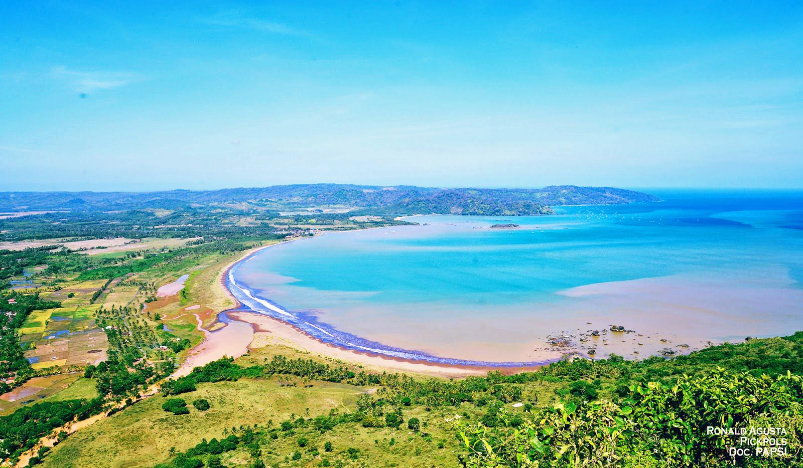
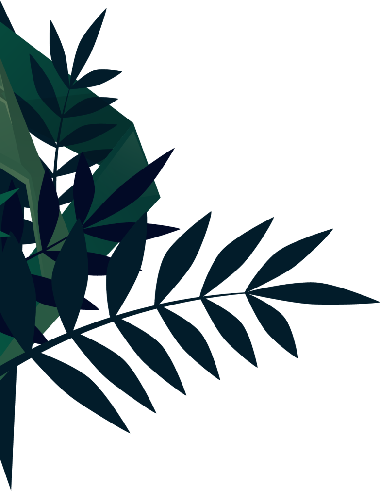
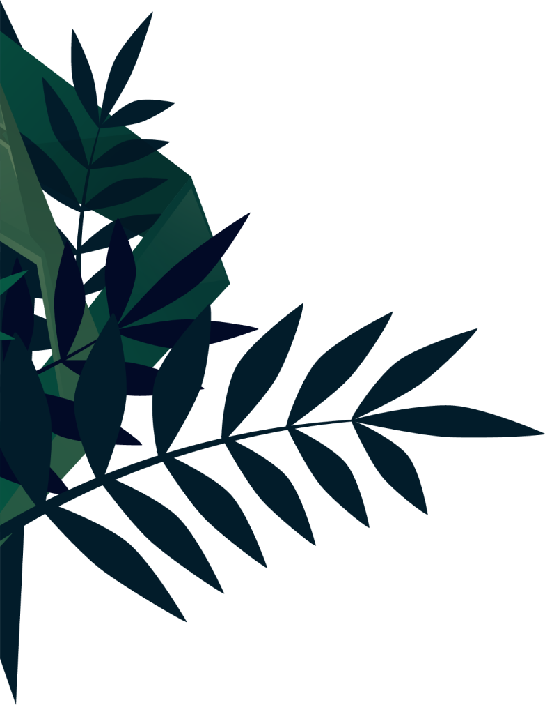

Geopark ciletuh
Bagian selatan geopark ciletuh memiliki
bentang alam yang sangat unik dan langka,
yaitu berupa bentuk daratan tinggi dengan
lembah berbentuk tapal kuda yang terbuka
ke arah laut sehingga membentuk seperti
panggung alam (amfiteater)
Amfiteater ini terbentuk karena adanya proses
geologi berupa sesar normal yang diikuti oleh
sebuah longsoran yang besar karena gaya vertikal
lebih besar dari gaya horizontal. Lembah amfiteater
dipenuhi oleh keindahan hamparan sawah.
Keindahan amfiteater dan Teluk Ciletuh dapat dilihat
dari daerah Panenjoan di Desa Tamanjaya, Pamoyanan
di Desa Ciemas, Puncak Tugu di Desa Mekarjaya,
Puncak darma dan Cikalapa di Desa Girimukti.

View Point Pamoyanan, Mekarjaya
Pemandangan indah ini dapat dilihat dari
Pamoyanan, Desa Mekarjaya. Yang dimana dapat ditempuh dengan mobil 4 Wheel Drive (4WD) ataupun sepeda motor dengan waktu tempuh 30 menit dan melalui jalan berbatu dari jalan utama Desa Tamanjaya


View Point Puncak Darma From Girimukti
Pemandangan Teluk Ciletuh ini dapat dilihat dari
Puncak Darma dan Cikalapa Desa Girimukti. Akses
dapat ditempuh dengan mobil atau sepeda motor
selama 15 menit dari Pantai Palangpan di Desa
Ciwaru dengan kondisi jalan mendaki, juga dapat
ditempuh dari jalan utama Desa Girimukti.

View Point Karang Daeu
Pulau Karang Daeu, terletak di Pantai Cikalapa,
Desa Girimukti. Pulau ini berbentuk unik
seperti kelinci merunduk atau anjing pudel
berbaring. Pulau ini dapat diakses dengan
perahu sekitar 5 menit dari pantai Palangpang,
dan pada saat surut, pulau ini dapat diakses
berjalan kaki dari Pantai Cikalapa. Secara
geologi, terdiri atas batuan sedimen Formasi
Ciletuh yang memiliki struktur sedimen sekuen
Bouma.

Pantai Cikeueus, Goa Meong
Pulau Karang Daeu, terletak di Pantai Cikalapa,
Desa Girimukti. Pulau ini berbentuk unik
seperti kelinci merunduk atau anjing pudel
berbaring. Pulau ini dapat diakses dengan
perahu sekitar 5 menit dari pantai Palangpang,
dan pada saat surut, pulau ini dapat diakses
berjalan kaki dari Pantai Cikalapa. Secara
geologi, terdiri atas batuan sedimen Formasi
Ciletuh yang memiliki struktur sedimen sekuen
Bouma.

Pantai Cikalapa
Pantai Cikalapa atau sering disebut juga
sebagai Pantai Karang Daeu, terletak di
Desa Girimukti. Akses menuju pantai ini
menggunakan sepeda motor dari Puncakdarma,
kira-kira 30 menit dengan pemandangan
indah hamparan hijau padi huma di sepanjang
perjalanan.

Batu Catur, Girimukti
Batu yang mirip dengan bidak catur ini terdapat
di Desa Girimukti. Batuan ini terbentuk
dari andesit lava yang telah mengalami
erosi dan pelapukan sehingga membentuk
seperti bidak catur. Arkeolog menyebut
batu mirip bidak catur yang ditemukan warga
merupakan artefak. Usia batu tersebut
diperkirakan peninggalan budaya Hindu atau
Buddha pasca-abad 5 Masehi.

View Point Curug Mawur

View Point Curug Larangan
Batu yang mirip dengan bidak catur ini terdapat
di Desa Girimukti. Batuan ini terbentuk dari
andesit lava yang telah mengalami erosi dan
pelapukan sehingga membentuk seperti bidak
catur. Arkeolog menyebut batu mirip bidak
catur yang ditemukan warga merupakan artefak.
Usia batu tersebut diperkirakan peninggalan
budaya Hindu atau Buddha pasca-abad 5 Masehi.


 
